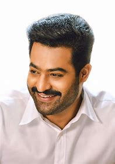

N.T.Rama rao jr.
Aritcle talk
From Wikipedia, the free encyclopedia
Nandamuri Taraka Rama Rao Jr. (born 20 May 1983), also known as Jr. N.T.R. or Tarak, is an Indian actor who primarily works in Telugu cinema. One of the highest paid Telugu film actors,[1][2]
Rama Rao Jr. has won several accolades, including two Filmfare Awards, two state Nandi Awards, and four CineMAA Awards. Since 2012, he has been featured in Forbes India's Celebrity 100 list..[3]
Early Life
Rama Rao was born on 20 May 1983 to film actor and politician, Nandamuri Harikrishna and Shalini Bhaskar Rao. His father is of Telugu descent and was born and raised at Nimmakuru, in Krishna district of Andhra Pradesh.[5] His mother is a Kannadiga, who hails from Kundapur,
Karnataka.[6][7] He is the grandson of Telugu actor and former Chief Minister of Andhra Pradesh, N. T. Rama Rao.[8] Initially named Tarak, he was renamed as N. T. Rama Rao on the suggestion of his grandfather.[9]
Recent Movies
RRR
- initial release:24 march 2022
- director:SS rajamouli
- music director:mm keeravani
aravinda sametha veera raghava
- director:trivikram
- music director:thaman s
- budget:90 crores INR
jai lava kusa
- director:ks ravindra
- producer:nandamuri kalyan ram
- music:devi sri pasad
janatha garage
- director:koratala shiva
- music director:devi sri prasad
- distrubuted by:eros international
temper
- director:puri jagannadh
- music director:anup rubens,mani sharma
- producer:ganesh babu,bandla ganesh